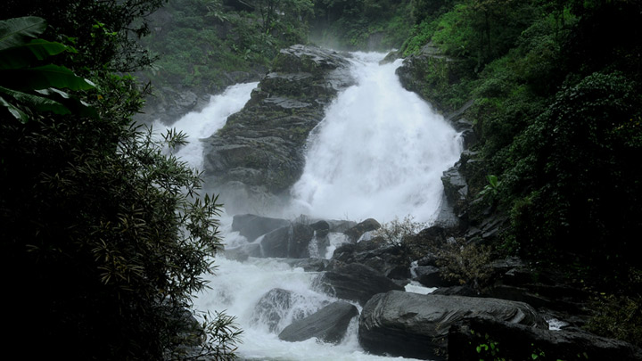

Adorning the northern hills of Kerala is the beautiful district of Wayanad, maintained by the District Tourism Promotion Council, Wayanad. This area is famous for its large amount of camping and trekking trails, breathtaking waterfalls, caves, bird-watching sites, flora, fauna and an overall plethora of magnificent sights. This area has been a tourist favourite over the years. People are especially delighted by the range of exotic products including spices, coffee, tea, bamboo products, honey and herbal plants available here.

MEENMUTTY WATERFALLS
Imagine water crashing onto the ground from over 1,000 ft. in three separate levels while an entire rainforest plays its role as the patient, supporting audience. This and much more await you at Meenmutty Falls, one among Wayanad’s delightful treasures. It can be only accessed after an arduous 2 km jungle trek, the visuals on display at the summit are worth the effort. One has separate viewing points for each of the three decks of the waterfalls and due to its location this is one of the few natural wonders in the world that can be experienced in near seclusion. You feel at ease, while the lush greenery gently washes away all that ails your soul, as the roaring water gently soothes your senses. A masterpiece, the waterfalls lie on the Ooty route in Wayanad.